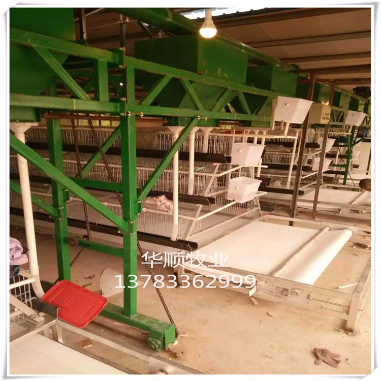

設備
設備只要能達到加熱保溫的目的，電熱、水暖氣暖、煤爐甚至火炕、地炕等加熱方式均可選用，但要注意煤爐加熱較髒，且易發生煤氣中毒，必須加煙囪。房屋設計時注意考慮保溫隔熱。
密閉雞舍必須採用機械通風，根據舍內氣流流動方向，可分為橫向通風和縱向通風兩種。橫向通風，是指舍內氣流方向與雞舍長軸垂直，縱向通風，是指將大量風機集中在一處，從而使舍內氣流與雞舍長軸平行的通風方式。1988年來的研究實踐證明，縱向通風效果較好，能消滅和克服橫向通風時舍內的通風死角和風速小而不均勻的現象，同時消除橫向通風造成雞舍間交叉感染的弊病。
只要能達到加熱保溫的目的，電熱、水暖氣暖、煤爐甚至火炕、地炕等加熱方式均可選用，但要注意煤爐加熱較髒，且易發生煤氣中毒，必須加煙囪。房屋設計時注意考慮保溫隔熱。
主要使用食槽，籠養雞都用長的通槽，平養育雛時也可使用這種供料方式，也可用吊桶供料。食槽的形狀對雞採食飼料的拋撒有很大影響，食槽過淺，沒有護沿會造成較多的飼料浪費。
機械化程度高的雞場採用傳送帶自動集蛋，效率高，但破損率較高。10月一般養雞戶都採用手工集蛋。
一般雞場採用人工定期清糞，規模較大雞場的可採用機械清糞。
育雛可以用網板，也可採用立體式多層育雛器；育成雞除平面網上飼養外，多採用重疊式或階梯式育成籠，農戶多採取60-70日齡直接轉人蛋雞籠。產蛋雞基本上都是籠養，目前國內生產雞籠的廠家很多，可根據實際情況去選購，雞隻籠位面積必須得到保證。
國內普遍採用普通燈泡來照明，發展趨勢是使用節能燈。許多雞場安裝定時自動控制的開關，取代人工開關，保證光照時間準確可靠。
孵化設備孵化過程中所需物品的總稱，它包括：孵化機、出雛機、孵化機配件、孵化房專用物品 ，加溫設備、加濕設備、及各個測量系統，等等。
農用噴霧器、氣泵等。
連續性注射器、刺種針等。
電動斷喙器、電烙鐵等。
彈簧秤、桿秤、電子稱等。